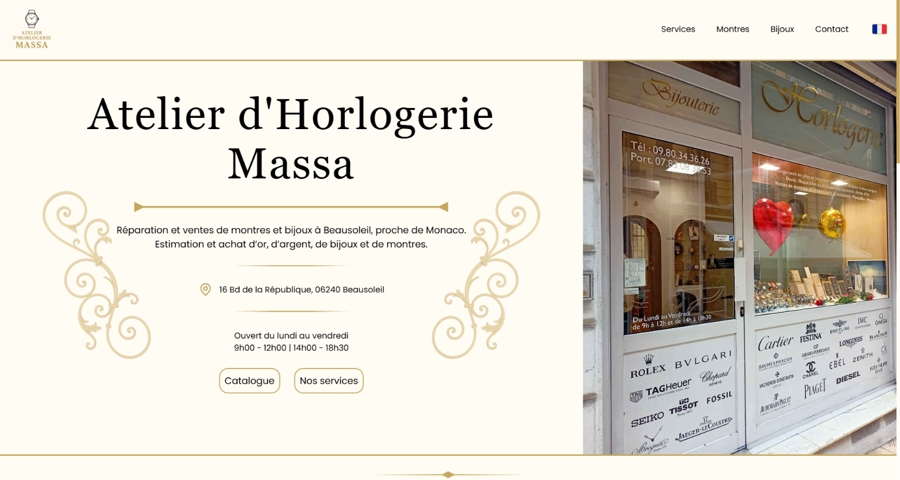
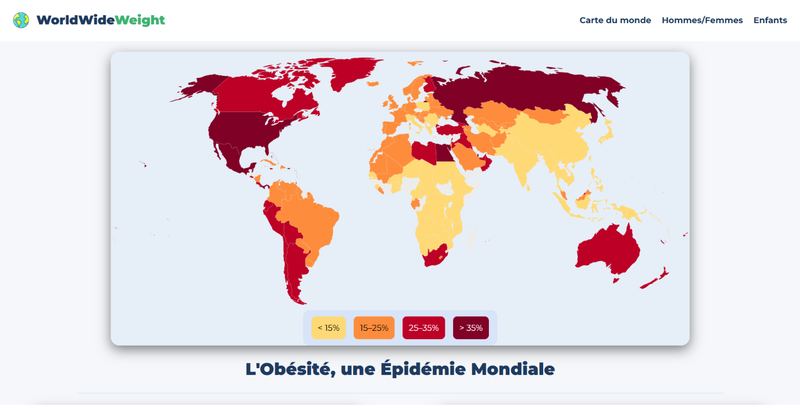
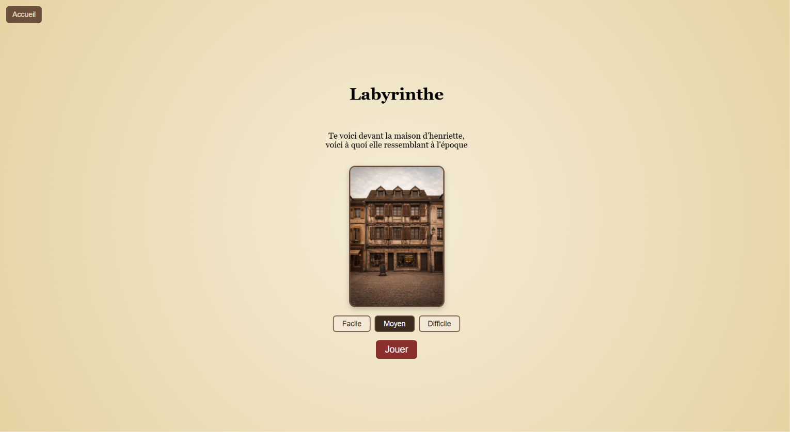
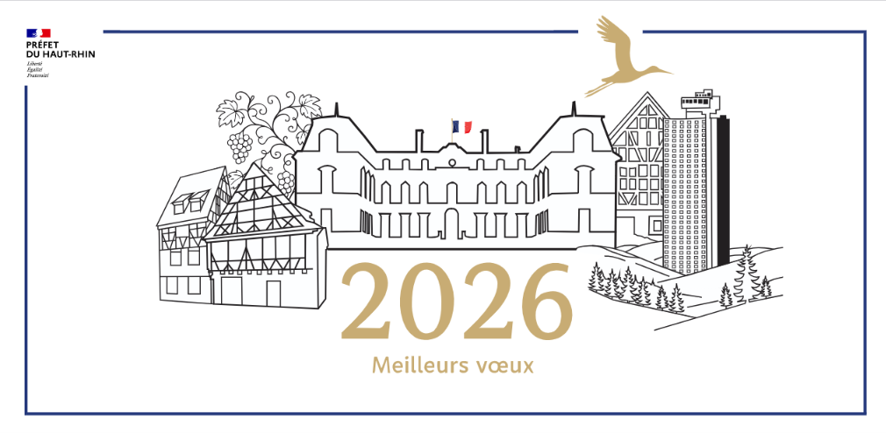

Développeur Web
Joël HAUPTMANN
Scroll pour découvrir
Mes projets
Voici une sélection de mes meilleurs projets.

Atelier d'Hologerie MASSA
Développement d'un site vitrine et d'un catalogue dynamique de montres et de bijoux, de la conception à la mise en ligne.
01/Le projet
L'atelier avait besoin d'un site pour présenter son activité et ses produits en ligne. L'enjeu était de proposer une vitrine claire, avec un catalogue permettant aux visiteurs de retrouver facilement les montres et les bijoux disponibles.
02/Ce que j'ai réalisé
J'ai pris en charge le projet de A à Z : maquettes sur Figma, intégration des pages, développement des fonctionnalités et mise en ligne. J'ai utilisé PHP et MySQL pour rendre le catalogue dynamique.
03/Les grandes étapes
- Concevoir les maquettes et organiser les pages.
- Développer le site et ses fonctionnalités.
- Créer le catalogue connecté à la base de données et ses filtres.
- Tester le site, corriger les problèmes et le mettre en ligne.
04/Le résultat
Le site est accessible en ligne et permet de découvrir l'atelier, ses services et son catalogue. Ce stage m'a surtout permis de travailler sur un projet complet en conditions réelles. Avec plus de temps, j'aurais approfondi le travail visuel pour mieux retranscrire les codes du luxe.

WorldWideWeight
Création d'un site web permettant d'explorer des données sur le poids à travers des graphiques interactifs, à partir d'un jeu de données JSON récupéré en ligne.
01/Le projet
Cette SAE avait pour objectif de transformer un jeu de données JSON récupéré en ligne en une expérience web interactive. L'idée était de rendre les données plus faciles à comprendre grâce à des graphiques plutôt que de simplement afficher des chiffres.
02/Ce que j'ai réalisé
J'ai travaillé sur la création du site en HTML, CSS et JavaScript, avec l'intégration des données et leur exploitation pour afficher des graphiques interactifs.
03/Les grandes étapes
- Récupérer et comprendre le jeu de données JSON.
- Organiser les informations pour les exploiter en JavaScript.
- Créer l'interface et intégrer les graphiques interactifs.
- Tester le fonctionnement du site et publier le résultat en ligne.
04/Le résultat
Le projet aboutit à un site accessible en ligne qui permet de visualiser les données sous forme de graphiques interactifs. Cette SAE m'a permis de mieux comprendre comment exploiter des données externes en JavaScript et les rendre plus lisibles pour les utilisateurs. Avec plus de temps, j'approfondirais la présentation des données et les possibilités d'interaction.

Jeu interactif - Labyrinthe
Développement d'un mini-jeu interactif intégré à un site proposant plusieurs jeux autour de la ville de Mulhouse.
01/Le projet
Dans le cadre d'un projet de groupe, nous avons créé un site proposant plusieurs mini-jeux autour de la ville de Mulhouse. L'objectif était de proposer une expérience interactive et ludique aux utilisateurs.
02/Ce que j'ai réalisé
Je me suis occupé du développement du mini-jeu Labyrinthe. J'ai utilisé HTML et CSS pour construire son interface, puis JavaScript pour gérer son fonctionnement et les interactions avec le joueur.
03/Les grandes étapes
- Définir le fonctionnement du labyrinthe et les interactions possibles.
- Créer la structure du jeu en HTML et travailler son apparence en CSS.
- Développer la logique du jeu en JavaScript.
- Tester le jeu et l'intégrer au projet collectif.
04/Le résultat
Le mini-jeu est accessible en ligne au sein du projet. Cette réalisation m'a permis de travailler davantage la logique JavaScript et la gestion des interactions. Elle m'a aussi appris à développer une fonctionnalité qui s'intègre dans un site réalisé en équipe.

Carte de vœux 2026
Conception d'une carte de vœux pour la Préfecture du Haut-Rhin. Réalisée sur Illustrator, notre proposition a été choisie parmi celles des différents binômes.
01/Le projet
Dans le cadre d'un cours, chaque binôme devait concevoir une carte de vœux destinée à la Préfecture du Haut-Rhin. L'objectif était de proposer une création soignée, adaptée à une communication institutionnelle et mettant en valeur le territoire.
02/Ce que j'ai réalisé
Avec mon binôme, j'ai participé à la création de la carte sur Illustrator. Le résultat associe des illustrations de bâtiments emblématiques, une palette de bleu et de doré et une mise en page épurée.
03/Les grandes étapes
- Comprendre la demande et les attentes du destinataire.
- Définir une direction graphique adaptée au contexte institutionnel.
- Créer les illustrations et organiser les éléments sur Illustrator.
- Finaliser la composition pour obtenir une carte cohérente et lisible.
04/Le résultat
Notre proposition a été choisie par la Préfecture parmi les cartes réalisées par les différents binômes. Ce projet m'a permis de travailler sur un support de communication concret et de voir que mes compétences en création graphique pouvaient répondre à une demande extérieure au cadre habituel du développement web.
À propos et compétences
J'ai 20 ans et j'aime transformer des idées en projets concrets et utiles, de la maquette Figma jusqu'à la mise en ligne.
Je travaille de façon pragmatique : une base simple, puis des améliorations par itérations.
Je cherche un stage dans le développement web pour une durée de 14 semaines à partir du 01 mars 2027.
Mon parcours
Un parcours qui me permet aujourd'hui de développer mes compétences et de construire mes projets professionnels.